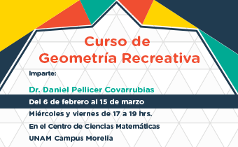

Próximos Eventos

Curso de Geometría Recreativa 2019
Curso de Geometría Recreativa 2019
06 de febrero al 15 de marzo 2019
En este curso mostraremos una parte divertida de la geometría, donde conocerás temas interesantes que no se enseñan en los cursos curriculares.
Curso: Laboratorio de Inferencia Estadística básica
23 de enero al 22 de febrero 2019
Con el propósito de capacitar al oyente para realizar inferencias básicas sobre conjuntos de datos estadísticos con la ayuda de las tecnologías de computación disponibles en la actualidad

Escuela de Geometría Algebraica Compleja y Dinámica de Teichmüller
05 a 07 de diciembre 2018
Esta Escuela esta dirigida a alumnos avanzados de licenciatura y de Posgrado en Matemáticas que tengan conocimientos básicos en geometría algebraica